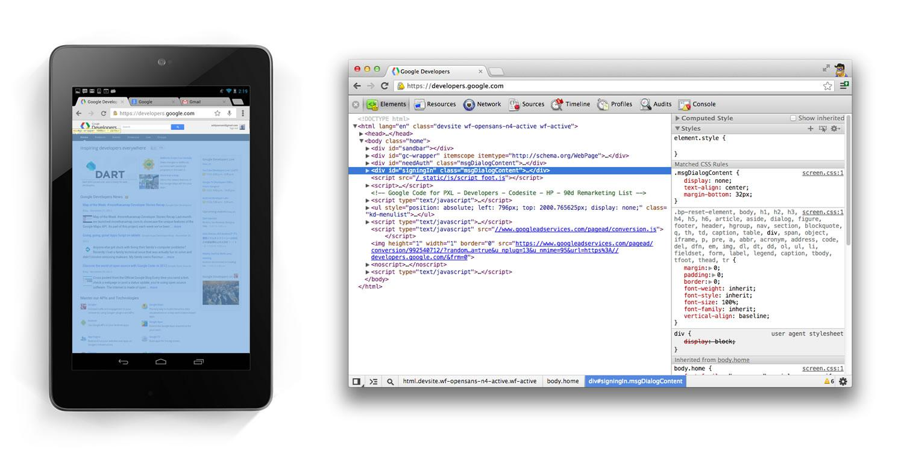
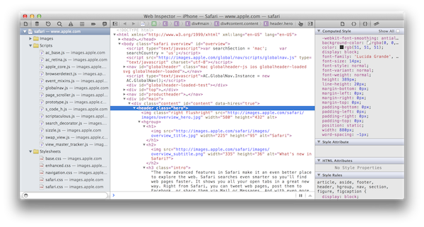
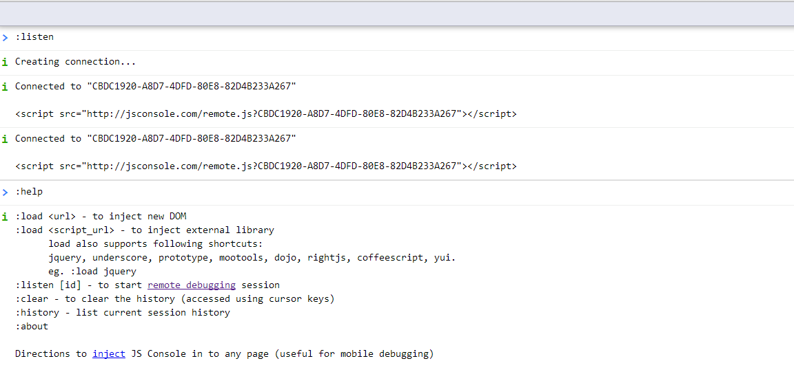
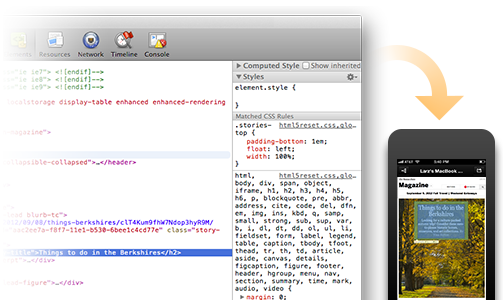

Developing For The Mobile Web
-
Mobile and some of it's Quirks
- Feature Detection...The Right Way!
- Awesome Web API's available
- Developers Tools
- Resources And Further Reading
The World Of Mobile
- One platform across a magnitude of devices
- Browsers are shipping new releases and features every 6 weeks
- Powerful features available
- ( this + Developers ) === EXCITEMENT
Quirks
All platforms have their quirks and hacks...here are some and their solutions to help get you started
Quirks
Media Queries
A core feature for all responsive mobile sites
Detecting Orientation Change
@media all and (orientation: landscape) {
/* only apply styles for landscape */
}
W3 Media Query Spec
"The ‘orientation’ media feature is ‘portrait’ when the value of the ‘height’ media feature is greater than or equal to the value of the ‘width’ media feature. Otherwise ‘orientation’ is ‘landscape’".
Quirks
Media Queries
Android Keyboard...
The keyboard is part of the screen real estate.
Fetching window.innerHeight will be different when keyboard is up / down.
W3 Media Query Spec
"The ‘orientation’ media feature is ‘portrait’ when the value of the ‘height’ media feature is greater than or equal to the value of the ‘width’ media feature. Otherwise ‘orientation’ is ‘landscape’".
Android Versions: 4.0 - 4.1.2 ( default browsers )
Quirks
Media Queries
Solution?
Aspect Ratio
"The ‘aspect-ratio’ media feature is defined as the ratio of the value of the ‘width’ media feature to the value of the ‘height’ media feature.’".
@media all and (min-aspect-ratio: 13/9) {
/* only apply styles for landscape */
}
Quirks
Orientation
window.orientation; // 90 === landscape...?
This value is updated on orientationchange event being fired.
Values are 0 or 180 for portrait and 90 or -90 for landscape...correct?
0 is based on the default "home" orientation. Motorolla Xoom, returns 0 as landscape.
Quirks
Orientation
Solution?
Comparing window.innerHeight to window.innerWidth on orientationchange AND onresize
Tip: Only run comparison once both events fired. Cache window.innerWeight, only compare if width has changed. Due to Android Keyboard firing onresize event
window.document.addEventListener( 'resize' , function() {
runResize = true;
if ( runResize && runOrientation ) {
handleChange() // compares: window.innerHeight > window.innerWidth
runResize = false;
runOrientation = false;
}
} , false );
Quirks
Sound
Playing sound using HTML5 Audio on a device is easy...
if ( typeof window.Audio !== 'undefined' ) {
// create new Audio Node
var canHasSound = new Audio();
// set source file, then load
canHasSound.src = "My_Amazing_Tunes.mp3";
canHasSound.load();
// PLAY!!!!
canHasSound.play();
}
Quirks
if ( typeof window.Audio !== 'undefined' ) {
// create new Audio Node
var canHasSound = new Audio(),
isIOS = /iPhone|iPad|iPod/ig.test( window.navigator.userAgent ); //Hacks...Yay...
// set source file, then load
canHasSound.src = "My_Amazing_Tunes.mp3";
if ( isIOS ) {
document.addEventListener( 'touchstart' , function() {
canHasSound.load();
document.removeEventListener( 'touchstart' , arguments.callee , false );
} , false );
} else {
canHasSound.load();
}
// PLAY!!!!
canHasSound.play();
}
Quirks
// create new Audio Node
var canHasSound = new Audio(),
touchToLoad = /iPhone|iPad|iPod|/ig.test( window.navigator.userAgent ), //Hacks...Yay...
touchToPlay = /iPhone|iPad|iPod|Chrome|Android x.x.x/ig.test( window.navigator.userAgent );//Moar
// set source file, then load
canHasSound.src = "My_Amazing_Tunes.mp3";
if ( touchToLoad ) {
document.addEventListener( 'touchstart' , function() {
canHasSound.load();
document.removeEventListener( 'touchstart' , arguments.callee , false );
}
} , false );
} else {
canHasSound.load();
}
// PLAY!!!!...eventually...
if ( touchToPlay ) {
document.addEventListener( 'touchstart' , function(){
canHasSound.play();
document.removeEventListener( 'touchstart' , arguments.callee , false );
} , false );
} else {
canHasSound.play();
}
Feature Detection
The Right Way
var testSounds = { key : 'touchToLoad' , Modernizr : [ 'Audio'] ,
custom : function() { /* Create and Play Audio as Test */ }
};
window.featurama.config.touchToLoad = {
regex : [ /(iPad|iPhone|iPod)/ig , /(Chrome)/ig ] ,
result : true
};
window.featurama.run( testSounds );
if ( window.featurama.results.touchToLoadSound ) {
// .. rest of code
}
Feature Detection
The Mobile Web is constantly changing and evolving...
be future friendly and feature detect
- Test as you intend to use it
- Leverage existing tools such as Modernizr and featurama.js
- Test Once, use everywhere
Web API's
Loads of Web API's that are available and AMAZE-BALLS!
getUserMedia API ( Accessing audio and video from the device )
var video = document.querySelector( 'video' );
navigator.getUserMedia( { audio: true , video : true },
function( stream ) {
video.src = window.URL.createObjectURL(stream);
}, onVideoFail );
Offline Support ( Detecting whether a device is connected to a network )
window.navigator.onLine; // true
Web API's
Web Notification API ( Allow to be able to send web notifications and pop open in a banner )
new Notification("JS In SA Talk about to begin",
{ iconUrl: "calendar.gif",
body: "Room 101",
onclose: function() { cancelReminders(event); }
});
Geolocation ( Able to get the devices' GeoLocation )
navigator.geolocation.getCurrentPosition( function( position ) {
do_something( position.coords.latitude , position.coords.longitude );
});
Web API's
Here is a list of many which are available today!
- WebRTC ( Web Real Time Connection )
- getUserMedia API ( Accessing audio and video from the device )
- Accelerometer ( devicemotion event )
- localStorage ( can be used to store JavaScript. Check out basket.js )
- Web Workers ( creating multi-threaded interfaces )
- Page Visibilty API ( detecting if page is in focus )
- Fullscreen API ( allowing a webpage to go fullscreen )
Dev Tools
- Chrome Remote Debugging
- IOS Remote Debugging
- jsConsole
- Adobe Edge Inspect
- Weinre
Chrome Remote Debugging
https://developers.google.com/chrome-developer-tools/docs/remote-debugging
Full Chrome Dev Tools Features
But Only On Chrome for Android ( requires ADB )
IOS Remote Debugging
https://developer.apple.com
Uses Safari Dev Tools
But Only On IOS 6 ( requires a Macbook/iMac )
jsConsole
http://jsconsole.com
Alows for a remote console on any device. Just include the required script
Just a console and objects are not expandable
Adobe Edge Inspect
http://html.adobe.com/edge/inspect/
Alows for a remote inspecting, live reload, screenshots.
On Android and IOS ( requires instalation of app on device )
Weinre
https://developers.google.com/chrome-developer-tools/docs/remote-debugging
- A remote instance of Webkit Inspector.
- A node package. Available on NPM.
- Allowing remote inspection, altering of css and full console on any device.
npm install weinre -g
Future of dev Tools?
http://brackets.io
- Remote Inspecting in your text editor.
- Live Reload/Editing.
- Written in HTML, CSS , JavaScript with a Node.js core
- Created and Maintained By Adobe
- Open Source ( https://github.com/adobe/brackets )
All that is missing is a JavaScript console and being able to remote debug with breakpoints...
Mobile Web Roundup
- You can define the features that you wish to use, and pollyfill the ones that don't or reduce the functionality accordingly
- There are some truly powerful Web API's available that are usable today
- Developer Tools are evolving at a rapid rate, making mobile development that much easier
- Huge prescence for the mobile web at Google I/O 2013 and with latest Chrome Experiments
- Mobile Web is being taken seriously as a viable platform. We have entire department ( +/- 75 ) dedicated to mobile web
- The Mobile Web is fun!
Links And Resources
<Thank You!>